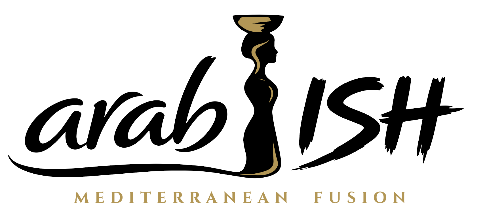

Signature
Gyro Chorizo Wrap
Spiced gyro-style meat meets smoky chorizo energy, wrapped with crisp vegetables, fries, and house sauce.

Madison, Wisconsin Food Truck
Fusion Mediterranean comfort food inspired by bold Middle Eastern flavor and built for everyday craving.

Featured Menu
Arab-ish makes Middle Eastern-inspired food approachable without watering it down. Strong flavor, clean presentation, and menu items that work for lunch crowds, events, catering, and future fast-casual service.
Spiced gyro-style meat meets smoky chorizo energy, wrapped with crisp vegetables, fries, and house sauce.

Crispy fries layered with bold protein, garlic sauce, herbs, pickles, and warm Mediterranean heat.

Crunchy falafel, grains, greens, pickled vegetables, sauces, and texture in every bite.

Seasonal fusion plates, event-only items, and chef-driven experiments built around bold craving.
What is Arab-ish?
Arab-ish is Mediterranean fusion with roots, confidence, and hospitality. The food is built around familiar formats people already love — wraps, fries, bowls, and event-friendly plates — then layered with bold Middle Eastern flavor, sauces, spice, and soul.
It should feel easy to try, hard to forget, and strong enough to grow from a Madison food truck into a future fast-casual restaurant brand.
Find the Truck
Follow the weekly schedule, book us for private events, or join the list for location drops and new menu releases.
Connect Google Maps, StreetFoodFinder, or a live schedule tool here for arab-ish.com.
Get UpdatesCatering
Professional, memorable food for churches, family reunions, weddings, corporate lunches, graduation parties, private events, and festivals.
Gallery
Use this section for real food, trailer, customer, grill, and catering photos as the brand grows.


★★★★★
Connect live Google reviews once the truck profile is active. Use testimonials to build trust for catering and first-time visitors.
Follow the Flavor